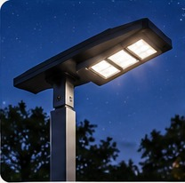
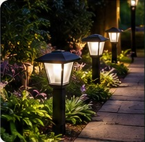

Explore the Collection
Different spaces need different kinds of lighting. Choose a category below to learn more about each type.

Solar Street Lights
Designed for roads, driveways, parking areas, and larger outdoor spaces.
View Details
